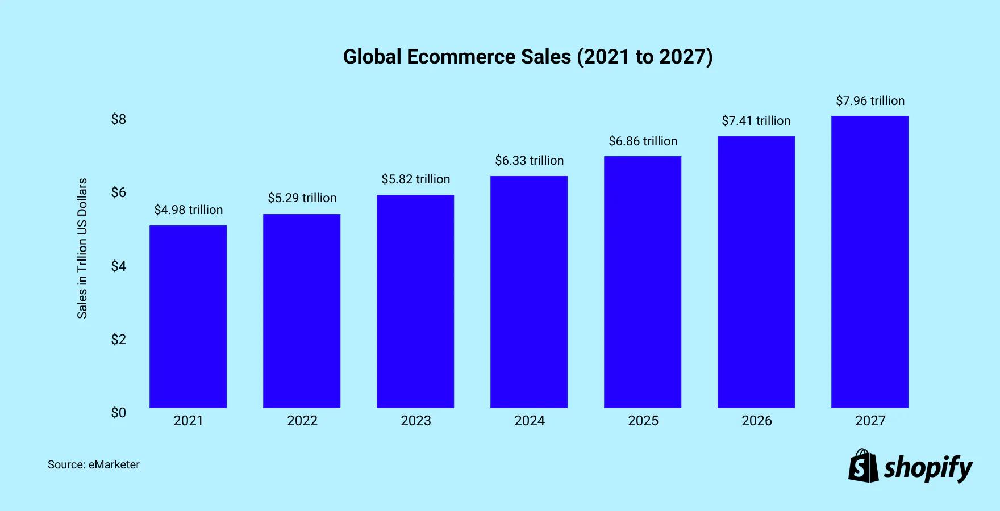

Overview
Vendora is an innovative e-commerce platform designed to serve as a one-stop hub for local businesses, including restaurants, retail stores, and service providers. Many small businesses struggle to create and maintain their own websites due to limited resources and technical expertise, leading to reduced visibility and missed growth opportunities. Our platform simplifies this process, allowing businesses to showcase their offerings while making it easy for consumers to find everything their community has to offer.
Target Market
-
Small Businesses:
- Restaurants: Local eateries looking to reach more customers without needing their own website.
- Retail Stores: Small shops wanting to expand their online presence and sales.
- Service Providers: Local services (like plumbers, electricians, etc.) that need visibility and an easy way for customers to book services.
-
Consumers:
- Shoppers: Individuals and families seeking convenience and a variety of local products and services.
Business Model
Vendora operates under a **New-Market Disruption** model, targeting local consumers and small businesses that lack an online presence. By providing a platform that empowers these businesses, Vendora creates a new market space where community engagement is prioritized, differentiating itself from larger competitors like Amazon.
Industry Feasibility:
There is a growing demand for local products and services online.
Competitive Analysis:
Vendora connects consumers to smaller local businesses, providing experiences that feel personalized. Competitors are larger-scale businesses that don't require Vendora's platform to find their target consumers.
Competitive Analysis Table
| Competitor | Strengths | Weaknesses |
|---|---|---|
| Hopscotch | Early in the local market | Challenges with deliveries |
| Bajan Market Place | Widely known in Barbados | Does not deliver |
| UberEats | Established brand, food focus | Not located in Barbados |
| Shopify | Strong e-commerce tools | Not a centralized market hub |